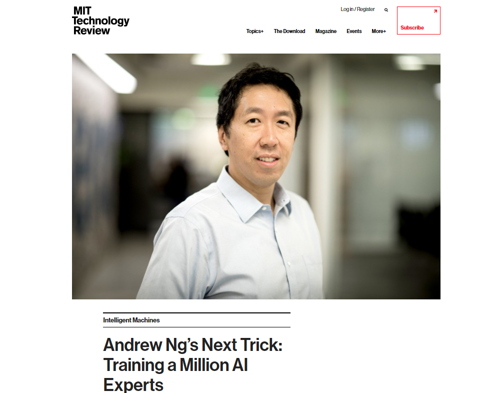
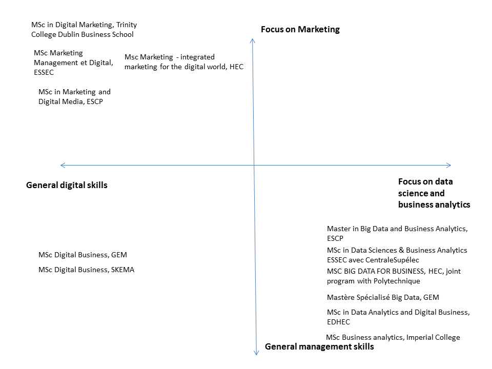
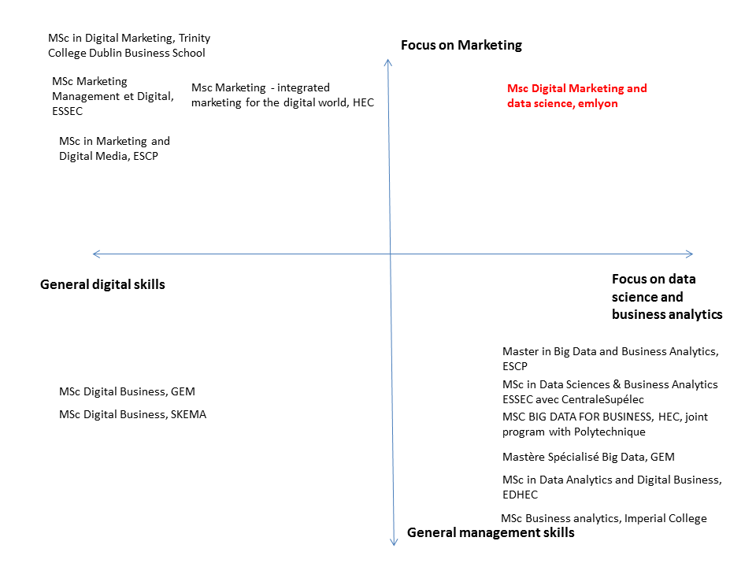
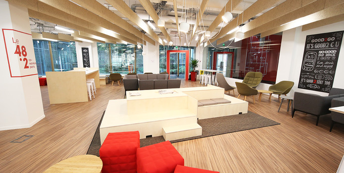
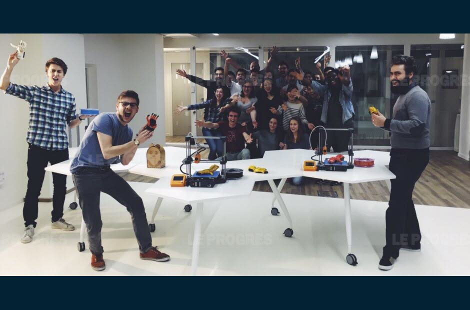

La révolution du business par la data science n’est pas un fantasme: elle est déjà là.
emlyon business school
Msc in Digital Marketing et Data Science
last modified: 2018-01-19
'Escape' or 'o' to see all sides, F11 for full screen, 's' for speaker notes
a. Le futur auquel vous devez vous préparer
Une seule illustration: les entrepots d’Amazon en 2013 et en 2016:
Le marketing automation va se développer, la compétence marketing seule sera insuffisante
Les profils de data scientists vont se multiplier, au profil de codeurs / informaticiens / statisticiens:

Figure 1. MIT Technology Review - 8 Aout 2017
Il manquera à ces data scientists la compétence métier.

Figure 2. Définition de la data science par Drew Conway
Les managers maîtrisant une compétence métier ET la data science seront en excellente position professionnelle.
b. Formations en marketing digital ou en data science, que choisir?
Si la compétence métier et la compétence data science sont indispensables, quelle voie choisir pour sa formation?

Figure 3. Benchmarking the best Msc in digital marketing and data science

Figure 4. The positioning of the Msc by emlyon
2. Elements clés du Msc DMDS
a. Dates
1er Février: date limite pour inscriptions "early bird" (- 10% sur le prix de la formation)
Septembre à Décembre 2018: 1er trimestre à Paris
Dec 2018: Learning trip à Boston (MIT, startups…)
Janvier à Mars 2019: 2e trimestre à Paris
Avril à Juin 2019: 3e trimestre à Milan
Juillet à Décembre: stage en entreprise
b. Chiffres
30 étudiants par promo
une équipe enseignante de 20 professeurs et professionnels
50% d’enseignants sont professeurs
490 heures d’enseignement
Prix: 24.9 k€
Salaires de sortie estimés à 45k€
Plusieurs centaines d’entreprises partenaires carrière emlyon
emlyon: 2e école française au classement mondial de l’employabilité
3. Liste des cours
a. Marketing Digital
M1 ‐ Digital Marketing
M2 ‐ Web Content Strategy
M3 ‐ Principles of user experience design
M4 ‐ Web analytics and programmatic advertising
M8 ‐ Store Digitalization
M9 ‐ Strategizing: new online business models
M10 ‐ Consumer behavior and identity in a digital world
M11 ‐ Ethics in Data Driven world(*)
b. Data science
M5 ‐ Business analytics: advanced Excel and SQL
M6 ‐ Python coding bootcamp
M7 ‐ Statistics for market research with R
M11 ‐ Ethics in Data Driven world
M12 ‐ Data science and text mining for marketing analytics with Python
M15 ‐ Machine learning and business cases using Python
c. Cross over digital marketing et data science
M13 ‐ CRM, data platforms and marketing automation
M14 ‐ Data visualization (including Tableau)
d. Cours disponibles à Politecnico Milan
Neuromarketing & biomarketing
Entrepreneurship and Marketing
Multichannel campaign design
Search Engine Marketing / Social Media Marketing
Social and unconventional marketing
Predictive Analytics and Business Applications
Project and People Management
Analytics for Management
Module ‐ Italian Way‐ (Fashion, Design & Furniture, Food & Wine, Automotive)
4. Un Msc d’excellence
a. Quelques focus sur le corps professoral
Figure 5. Professor Lim from the MIT Mobile Experience Lab
Figure 6. Professor Arnould from emlyon business school
Figure 7. ThinkR, a leading training company in the R language
(participation à confirmer)
Ce Msc bénéficie d’un environnement très riche sur la data science à emlyon, avec notamment le Data R&D Institute:
Figure 8. Professor Cherny, member of the Data R&D Institute and co-organizer of Openvis
b. Une double direction
Figure 9. Professor Pagani, specialist of digital marketing

Figure 10. Professor Levallois, specialist of data science for business
c. Un accès à toutes les ressources de l’environnement emlyon
Equipe carrière, événements, conférences, rencontres entreprises, accès au réseau des 25,000 alumni…
campus parisien neuf, moderne et central (ouvert en 2016)

Figure 11. Un des espaces de travail du campus parisien de emlyon
présence d’un Makers Lab et d’un incubateur:

Figure 12. Une équipe d’étudiants à la fin d’un projet Makers
C’est la fin de cette présentation!
Je reste à votre disposition pour des questions, également par email à levallois@em-lyon.com
Merci!
This presentation is designed by Clement Levallois.
Discover my other courses in data / tech for business: http://www.clementlevallois.net
Or get in touch via Twitter: @seinecle